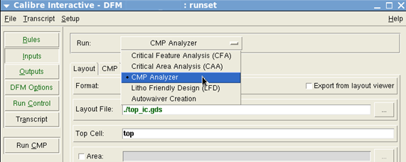
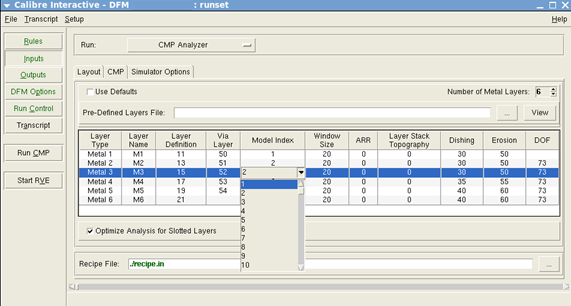
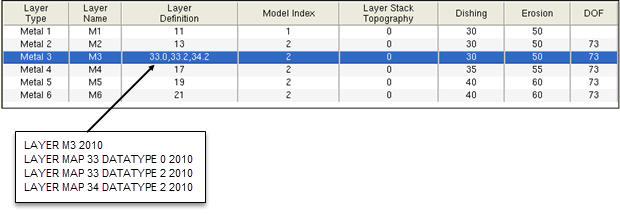
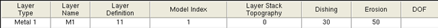
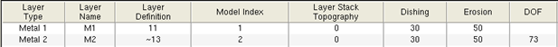
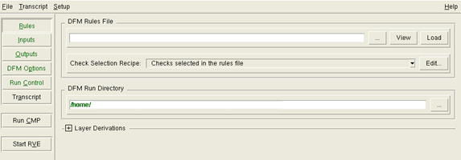
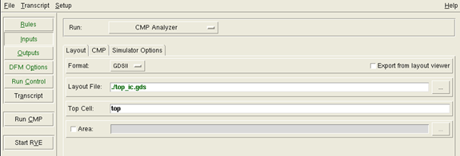
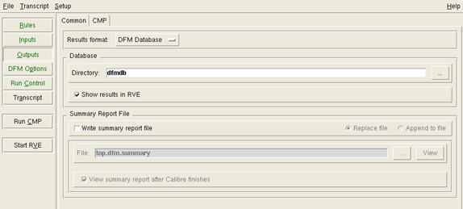
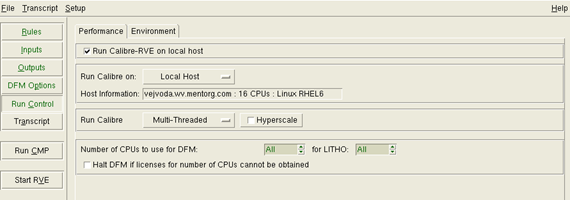

The GUI flow
is recommended as a first step when doing Calibre CMP analysis.
It allows you to use the Calibre® Interactive™ GUI to set up a run and create
a runset file, which saves Calibre Interactive settings and is required
in the Calibre CMPAnalyzer batch flow. It also allows you to run
the CMP analysis and launch Calibre RVE for DFM to view results.
The default flow for multilayer (two or more layers selected)
Calibre CMPAnalyzer runs, performs extraction, simulation, and hotspot
calculation for each layer sequentially. As soon as the hotspot
calculation for a layer finishes, you can access the dfmdb and analyze
the layer data and hotspots with Calibre RVE for DFM while extraction
and simulation for the next (upper) layer is in progress. Calibre
CMPAnalyzer also supports a multi-processing flow which runs multilayer
simulation with extraction and simulation in parallel. See option
“Enable Smart Distribution for Multi‑Threaded Run” under the Calibre
Interactive GUI “Simulator Options Tab on the Inputs Pane” for information
on running this flow.
If no threshold values are specified for a default hotspot (erosion,
dishing, or depth of focus) in the Calibre Interactive CMP simulator,
the hotspot calculation is suppressed in the Calibre RVE for DFM
report card. However, the colormaps and histograms are still available
in the corresponding menus.
Note: If one or more hotspot threshold values are specified,
then all of the default hotspots data columns are displayed in Calibre
RVE for DFM.
See “Calculating User-Defined Hotspots” for
more information on user‑defined hotspots.
See “Using the Calibre CMPAnalyzer Batch Flow” for information on the batch
flow.
Procedure
- Invoke Calibre DESIGNrev:
calibredrv layout
where layout specifies
the path to your layout file. Alternatively, you can open your design
by invoking Calibre DESIGNrev without the layout argument,
choosing File > Open Layout Files,
browsing to or entering the path to your layout, then clicking Open.
- If the layers are displayed
using non-standard colors or fill patterns, choose Layer > Load
Layer Properties, select your layer properties file,
and click Open.
Tip When your layer properties
file is named as follows, it is loaded automatically when your layout
is opened: layout_name.layout_extension.layerprops
- In Calibre DESIGNrev, choose Verification
> Run DFM.
This invokes Calibre Interactive
in DFM mode. The Load Runset File dialog box also opens, allowing
you to specify a Calibre Interactive runset.
- In the Load Runset File dialog
box, click Cancel. The Calibre Interactive
window will refresh with the Inputs page
displayed.
- Click on the dropdown list
for Run and select CMP Analyzer.
Figure 1. Displaying the CMP
Tab
The CMP tab
is added to the Inputs pane.
- Click the CMP tab
to display it. Refer to Figure 2 to view the table settings
and entry fields.
- Enter the Number
of Metal Layers in your design.
The table updates to display
one row for each layer in your design and displays additional fields
for dishing, erosion, and depth of focus rules.
Note: Do not use the underscore (_) in layer names.
- For each row in the table,
modify the Model Index values as needed.
Allowed values for Model Index are 1 through 99, where
the index is the sequential number of the model in the recipe file,
with the first recipe having a Model Index of 1. Change the values
of entries in the table as necessary.
Figure 2. Specifying
Model Index
- Edit other entries in the
table as needed. You can use the right-click menu to select the columns
to display and to adjust layer parameters.
- (Optional) You can edit the
layer numbers in the table and specify subtractive (-) or negative
(~) layers and datatypes. Multiple layers are allowed for some entries.
Figure 3 shows how the layer number entry is
converted to rule file statements. If you specify a layer_number
with no layer_datatype, all data types for that layer are mapped to
the same Calibre layer.
See “Layer Number Specification Format” for the complete format and
how subtractive and negative layers are handled.
Figure 3. Mapping Layers and
Datatypes
- Choose optimized or standard
flow with the Optimize Analysis for Slotted Layers checkbox;
this setting is checked by default.
Optimized
for Slotted (Negative) Layers Flow — (checkbox checked)
In this flow (also referred to as the optimized flow), the negation
with DB_EXTENT is done during the CMP simulation. The optimized
flow allows you to postpone the negation of negative and subtractive
layers until the CMP simulation.
Note: The optimized flow is applied to those layers for which
all of the layer numbers for “Layer Definition” are negative (~),
subtractive (-), or absent in the GUI (empty field).
Standard (Positive)
Flow — (checkbox cleared) In this flow, the negation
with DB_EXTENT is done in the rule deck file.
In Figure 4, the optimized and standard
flows are identical for the M1 layer. The slot optimization does
not affect the M1 layer because there are no negative or subtractive layer
numbers in the corresponding field.
Figure 4. Slot Optimization
Example 1
In Figure 5, the optimized flow affects
only layer M2, because the Layer Definition field contains a negative
layer.
Figure 5. Slot Optimization
Example 2
- Provide the path to your recipe
file in the Recipe File field.
- (Optional) Click the Simulator
Options tab to specify additional options, such as window
size and other processing options. See “Simulator Options Tab on the Inputs Pane”.
- One by one, click the buttons
in the left vertical bar of the Calibre Interactive GUI to control
other aspects of the CMP run, following the recommendations in the
steps below.
Buttons in the left vertical
bar become green when Calibre Interactive has enough information
to execute a run. Calibre CMPAnalyzer does not use all the data
in these fields, so certain settings may not apply. Ensure that
none of the buttons appear red.
- Click the Rules button.
A rule file is optional. If
entered, it is included in the control file generated by Calibre
Interactive. Sections of the control file are encrypted.
Figure 6. Calibre Interactive
Rules Tab
- Click the Inputs button,
and select the Layout tab.
In the Layout File field,
enter the path to your layout. Enter the layout top cell next to
the Top Cell field.
The Simulator Options tab contains run
specification and process flow options. See “Simulator Options Tab on the Inputs Pane” for a
list of these options.
Figure 7. Calibre
Interactive Inputs Tab
- Click the Outputs button.
If necessary, modify the name of the database in the Directory field.
The database name is the name
of a directory containing the results of the CMP Analyzer run, which
are output as a DFM database. CMPAnalyzer creates this directory
inside your working directory.
Select the Show Results in RVE button.
In the CMP tab,
you can optionally enable the creation of a CMP summary report file.
Figure 8. Calibre Interactive
Outputs Section
- Click the Run Control button.
Select any additional items as necessary for your design flow.
Figure 9. Calibre Interactive
Run Control Tab
- Choose File > Save
Runset As to save the runset to a file. Enter “runset”
for the file name. If you are planning to run CMPAnalyzer through
the command line, exit Calibre Interactive and refer to “Using the Calibre CMPAnalyzer Batch Flow”.
- Invoke CMPAnalyzer by clicking Run
CMP. This invokes Calibre with the -dfm and ‑cmp switches.
Run times increase as you increase
the number of metal layers or the design complexity. During the
run, the density data is extracted from the layout and fed to the
simulator for analysis. The simulator calculates thickness data
which is then analyzed for hotspots.
- Calibre RVE for DFM displays
automatically when the run is complete. Refer to “CMP Analysis Results” for instructions on how to
interpret the CMP analysis results.